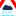
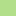

<!doctype html>
<html lang="en">
    <head>
        <meta charset="utf-8">
        <meta http-equiv="X-UA-Compatible" content="IE=edge">
        <meta name="viewport" content="initial-scale=1,user-scalable=no,maximum-scale=1,width=device-width">
        <meta name="mobile-web-app-capable" content="yes">
        <meta name="apple-mobile-web-app-capable" content="yes">
        <link rel="stylesheet" href="css/leaflet.css">
        <link rel="stylesheet" href="css/L.Control.Layers.Tree.css">
        <link rel="stylesheet" href="css/qgis2web.css">
        <link rel="stylesheet" href="css/fontawesome-all.min.css">
        <link rel="stylesheet" href="css/leaflet-control-geocoder.Geocoder.css">
        <link rel="stylesheet" href="css/leaflet-measure.css">
        <link href='https://fonts.googleapis.com/css?family=Montserrat' rel='stylesheet'>
        <style>
        html, body, #map {
            width: 100%;
            height: 100%;
            padding: 0;
            margin: 0;
        }
        </style>
        <title></title>
    </head>
    <body>
        <div id="map">
        </div>
        <script src="js/qgis2web_expressions.js"></script>
        <script src="js/leaflet.js"></script>
        <script src="js/L.Control.Layers.Tree.min.js"></script>
        <script src="js/leaflet.rotatedMarker.js"></script>
        <script src="js/leaflet.pattern.js"></script>
        <script src="js/leaflet-hash.js"></script>
        <script src="js/Autolinker.min.js"></script>
        <script src="js/rbush.min.js"></script>
        <script src="js/labelgun.min.js"></script>
        <script src="js/labels.js"></script>
        <script src="js/leaflet.wms.js"></script>
        <script src="js/leaflet-control-geocoder.Geocoder.js"></script>
        <script src="js/leaflet-measure.js"></script>
        <script src="data/Grauderisc_5.js"></script>
        <script src="data/Puntscrtics_6.js"></script>
        <script>
        var highlightLayer;
        function highlightFeature(e) {
            highlightLayer = e.target;

            if (e.target.feature.geometry.type === 'LineString' || e.target.feature.geometry.type === 'MultiLineString') {
              highlightLayer.setStyle({
                color: '#ffffff',
              });
            } else {
              highlightLayer.setStyle({
                fillColor: '#ffffff',
                fillOpacity: 1
              });
            }
            highlightLayer.openPopup();
        }
        var map = L.map('map', {
            zoomControl:true, maxZoom:28, minZoom:1
        })
        var hash = new L.Hash(map);
        map.attributionControl.setPrefix('<a href="https://github.com/tomchadwin/qgis2web" target="_blank">qgis2web</a> &middot; <a href="https://leafletjs.com" title="A JS library for interactive maps">Leaflet</a> &middot; <a href="https://qgis.org">QGIS</a>');
        var autolinker = new Autolinker({truncate: {length: 30, location: 'smart'}});
        function removeEmptyRowsFromPopupContent(content, feature) {
         var tempDiv = document.createElement('div');
         tempDiv.innerHTML = content;
         var rows = tempDiv.querySelectorAll('tr');
         for (var i = 0; i < rows.length; i++) {
             var td = rows[i].querySelector('td.visible-with-data');
             var key = td ? td.id : '';
             if (td && td.classList.contains('visible-with-data') && feature.properties[key] == null) {
                 rows[i].parentNode.removeChild(rows[i]);
             }
         }
         return tempDiv.innerHTML;
        }
        document.querySelector(".leaflet-popup-pane").addEventListener("load", function(event) {
          var tagName = event.target.tagName,
            popup = map._popup;
          // Also check if flag is already set.
          if (tagName === "IMG" && popup && !popup._updated) {
            popup._updated = true; // Set flag to prevent looping.
            popup.update();
          }
        }, true);
        var measureControl = new L.Control.Measure({
            position: 'topleft',
            primaryLengthUnit: 'meters',
            secondaryLengthUnit: 'kilometers',
            primaryAreaUnit: 'sqmeters',
            secondaryAreaUnit: 'hectares'
        });
        measureControl.addTo(map);
        document.getElementsByClassName('leaflet-control-measure-toggle')[0]
        .innerHTML = '';
        document.getElementsByClassName('leaflet-control-measure-toggle')[0]
        .className += ' fas fa-ruler';
        var bounds_group = new L.featureGroup([]);
        function setBounds() {
            if (bounds_group.getLayers().length) {
                map.fitBounds(bounds_group.getBounds());
            }
        }
        map.createPane('pane_Ortoimagen_0');
        map.getPane('pane_Ortoimagen_0').style.zIndex = 400;
        var layer_Ortoimagen_0 = L.WMS.layer("https://www.ign.es/wms-inspire/pnoa-ma", "OI.OrthoimageCoverage", {
            pane: 'pane_Ortoimagen_0',
            format: 'image/png',
            uppercase: true,
            transparent: true,
            continuousWorld : true,
            tiled: true,
            info_format: 'text/html',
            opacity: 1,
            identify: false,
            attribution: '',
        });
        map.addLayer(layer_Ortoimagen_0);
        map.createPane('pane_GoogleMaps_1');
        map.getPane('pane_GoogleMaps_1').style.zIndex = 401;
        var layer_GoogleMaps_1 = L.tileLayer('https://mt1.google.com/vt/lyrs=r&x={x}&y={y}&z={z}', {
            pane: 'pane_GoogleMaps_1',
            opacity: 1.0,
            attribution: '',
            minZoom: 1,
            maxZoom: 28,
        });
        layer_GoogleMaps_1;
        map.addLayer(layer_GoogleMaps_1);
        map.createPane('pane_RiesgoalapoblacindeorigenfluvialT500aos_2');
        map.getPane('pane_RiesgoalapoblacindeorigenfluvialT500aos_2').style.zIndex = 402;
        var layer_RiesgoalapoblacindeorigenfluvialT500aos_2 = L.WMS.layer("https://wms.mapama.gob.es/sig/Agua/Riesgo/RiesgoPob_500/wms.aspx", "NZ.RiskZone", {
            pane: 'pane_RiesgoalapoblacindeorigenfluvialT500aos_2',
            format: 'image/png',
            uppercase: true,
            transparent: true,
            continuousWorld : true,
            tiled: true,
            info_format: 'text/html',
            opacity: 1,
            identify: false,
            attribution: '',
        });
        map.addLayer(layer_RiesgoalapoblacindeorigenfluvialT500aos_2);
        map.createPane('pane_RiesgoalapoblacindeorigenfluvialT100aos_3');
        map.getPane('pane_RiesgoalapoblacindeorigenfluvialT100aos_3').style.zIndex = 403;
        var layer_RiesgoalapoblacindeorigenfluvialT100aos_3 = L.WMS.layer("https://wms.mapama.gob.es/sig/Agua/Riesgo/RiesgoPob_100/wms.aspx", "NZ.RiskZone", {
            pane: 'pane_RiesgoalapoblacindeorigenfluvialT100aos_3',
            format: 'image/png',
            uppercase: true,
            transparent: true,
            continuousWorld : true,
            tiled: true,
            info_format: 'text/html',
            opacity: 1,
            identify: false,
            attribution: '',
        });
        map.addLayer(layer_RiesgoalapoblacindeorigenfluvialT100aos_3);
        map.createPane('pane_Riesgoalapoblacindeorigenfluvialt10aos_4');
        map.getPane('pane_Riesgoalapoblacindeorigenfluvialt10aos_4').style.zIndex = 404;
        var layer_Riesgoalapoblacindeorigenfluvialt10aos_4 = L.WMS.layer("https://wms.mapama.gob.es/sig/Agua/Riesgo/RiesgoPob_10/wms.aspx", "NZ.RiskZone", {
            pane: 'pane_Riesgoalapoblacindeorigenfluvialt10aos_4',
            format: 'image/png',
            uppercase: true,
            transparent: true,
            continuousWorld : true,
            tiled: true,
            info_format: 'text/html',
            opacity: 1,
            identify: false,
            attribution: '',
        });
        map.addLayer(layer_Riesgoalapoblacindeorigenfluvialt10aos_4);
        function pop_Grauderisc_5(feature, layer) {
            layer.on({
                mouseout: function(e) {
                    for (var i in e.target._eventParents) {
                        if (typeof e.target._eventParents[i].resetStyle === 'function') {
                            e.target._eventParents[i].resetStyle(e.target);
                        }
                    }
                    if (typeof layer.closePopup == 'function') {
                        layer.closePopup();
                    } else {
                        layer.eachLayer(function(feature){
                            feature.closePopup()
                        });
                    }
                },
                mouseover: highlightFeature,
            });
        }

        function style_Grauderisc_5_0(feature) {
            switch(String(feature.properties['q2wHide_risc'])) {
                case 'Molt Baix':
                    return {
                pane: 'pane_Grauderisc_5',
                opacity: 1,
                color: 'rgba(51,160,44,0.75)',
                dashArray: '',
                lineCap: 'butt',
                lineJoin: 'miter',
                weight: 1.0, 
                fill: true,
                fillOpacity: 1,
                fillColor: 'rgba(51,160,44,0.75)',
                interactive: true,
            }
                    break;
                case 'Baix':
                    return {
                pane: 'pane_Grauderisc_5',
                opacity: 1,
                color: 'rgba(178,223,138,0.75)',
                dashArray: '',
                lineCap: 'butt',
                lineJoin: 'miter',
                weight: 1.0, 
                fill: true,
                fillOpacity: 1,
                fillColor: 'rgba(178,223,138,0.75)',
                interactive: true,
            }
                    break;
                case 'Mig':
                    return {
                pane: 'pane_Grauderisc_5',
                opacity: 1,
                color: 'rgba(255,255,9,0.75)',
                dashArray: '',
                lineCap: 'butt',
                lineJoin: 'miter',
                weight: 1.0, 
                fill: true,
                fillOpacity: 1,
                fillColor: 'rgba(255,255,9,0.75)',
                interactive: true,
            }
                    break;
                case 'Alt':
                    return {
                pane: 'pane_Grauderisc_5',
                opacity: 1,
                color: 'rgba(255,127,0,0.75)',
                dashArray: '',
                lineCap: 'butt',
                lineJoin: 'miter',
                weight: 1.0, 
                fill: true,
                fillOpacity: 1,
                fillColor: 'rgba(255,127,0,0.75)',
                interactive: true,
            }
                    break;
                case 'Molt Alt':
                    return {
                pane: 'pane_Grauderisc_5',
                opacity: 1,
                color: 'rgba(227,26,28,0.75)',
                dashArray: '',
                lineCap: 'butt',
                lineJoin: 'miter',
                weight: 1.0, 
                fill: true,
                fillOpacity: 1,
                fillColor: 'rgba(227,26,28,0.75)',
                interactive: true,
            }
                    break;
            }
        }
        map.createPane('pane_Grauderisc_5');
        map.getPane('pane_Grauderisc_5').style.zIndex = 405;
        map.getPane('pane_Grauderisc_5').style['mix-blend-mode'] = 'normal';
        var layer_Grauderisc_5 = new L.geoJson(json_Grauderisc_5, {
            attribution: '',
            interactive: true,
            dataVar: 'json_Grauderisc_5',
            layerName: 'layer_Grauderisc_5',
            pane: 'pane_Grauderisc_5',
            onEachFeature: pop_Grauderisc_5,
            style: style_Grauderisc_5_0,
        });
        bounds_group.addLayer(layer_Grauderisc_5);
        map.addLayer(layer_Grauderisc_5);
        function pop_Puntscrtics_6(feature, layer) {
            layer.on({
                mouseout: function(e) {
                    for (var i in e.target._eventParents) {
                        if (typeof e.target._eventParents[i].resetStyle === 'function') {
                            e.target._eventParents[i].resetStyle(e.target);
                        }
                    }
                    if (typeof layer.closePopup == 'function') {
                        layer.closePopup();
                    } else {
                        layer.eachLayer(function(feature){
                            feature.closePopup()
                        });
                    }
                },
                mouseover: highlightFeature,
            });
            var popupContent = '<table>\
                    <tr>\
                        <td colspan="2">' + (feature.properties['nom'] !== null ? autolinker.link(feature.properties['nom'].toLocaleString()) : '') + '</td>\
                    </tr>\
                    <tr>\
                        <td colspan="2">' + (feature.properties['image'] !== null ? autolinker.link(feature.properties['image'].toLocaleString()) : '') + '</td>\
                    </tr>\
                </table>';
            layer.bindPopup(popupContent, {maxHeight: 400});
            var popup = layer.getPopup();
            var content = popup.getContent();
            var updatedContent = removeEmptyRowsFromPopupContent(content, feature);
            popup.setContent(updatedContent);
        }

        function style_Puntscrtics_6_0() {
            return {
                pane: 'pane_Puntscrtics_6',
        rotationAngle: 0.0,
        rotationOrigin: 'center center',
        icon: L.icon({
            iconUrl: 'markers/Puntscrtics_6.svg',
            iconSize: [36.48, 36.48]
        }),
                interactive: true,
            }
        }
        map.createPane('pane_Puntscrtics_6');
        map.getPane('pane_Puntscrtics_6').style.zIndex = 406;
        map.getPane('pane_Puntscrtics_6').style['mix-blend-mode'] = 'normal';
        var layer_Puntscrtics_6 = new L.geoJson(json_Puntscrtics_6, {
            attribution: '',
            interactive: true,
            dataVar: 'json_Puntscrtics_6',
            layerName: 'layer_Puntscrtics_6',
            pane: 'pane_Puntscrtics_6',
            onEachFeature: pop_Puntscrtics_6,
            pointToLayer: function (feature, latlng) {
                var context = {
                    feature: feature,
                    variables: {}
                };
                return L.marker(latlng, style_Puntscrtics_6_0(feature));
            },
        });
        bounds_group.addLayer(layer_Puntscrtics_6);
        map.addLayer(layer_Puntscrtics_6);
        var osmGeocoder = new L.Control.Geocoder({
            collapsed: true,
            position: 'topleft',
            text: 'Search',
            title: 'Testing'
        }).addTo(map);
        document.getElementsByClassName('leaflet-control-geocoder-icon')[0]
        .className += ' fa fa-search';
        document.getElementsByClassName('leaflet-control-geocoder-icon')[0]
        .title += 'Search for a place';
        var baseMaps = {};
        var overlaysTree = [
            {label: ' Punts crítics', layer: layer_Puntscrtics_6},
            {label: 'Grau de risc<br /><table><tr><td style="text-align: center;"></td><td>Molt Baix</td></tr><tr><td style="text-align: center;"></td><td>Baix</td></tr><tr><td style="text-align: center;"></td><td>Mig</td></tr><tr><td style="text-align: center;"></td><td>Alt</td></tr><tr><td style="text-align: center;"></td><td>Molt Alt</td></tr></table>', layer: layer_Grauderisc_5},
            {label: "Riesgo a la población de origen fluvial t=10 años", layer: layer_Riesgoalapoblacindeorigenfluvialt10aos_4},
            {label: "Riesgo a la población de origen fluvial T=100 años", layer: layer_RiesgoalapoblacindeorigenfluvialT100aos_3},
            {label: "Riesgo a la población de origen fluvial T=500 años", layer: layer_RiesgoalapoblacindeorigenfluvialT500aos_2},
            {label: "GoogleMaps", layer: layer_GoogleMaps_1},
            {label: "Ortoimagen", layer: layer_Ortoimagen_0},]
        var lay = L.control.layers.tree(null, overlaysTree,{
            //namedToggle: true,
            //selectorBack: false,
            //closedSymbol: '&#8862; &#x1f5c0;',
            //openedSymbol: '&#8863; &#x1f5c1;',
            //collapseAll: 'Collapse all',
            //expandAll: 'Expand all',
            collapsed: true,
        });
        lay.addTo(map);
        setBounds();
        </script>
    </body>
</html>
